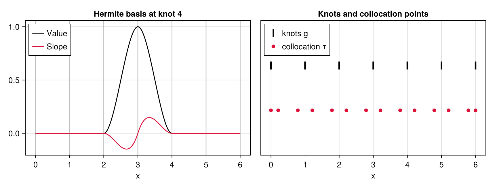
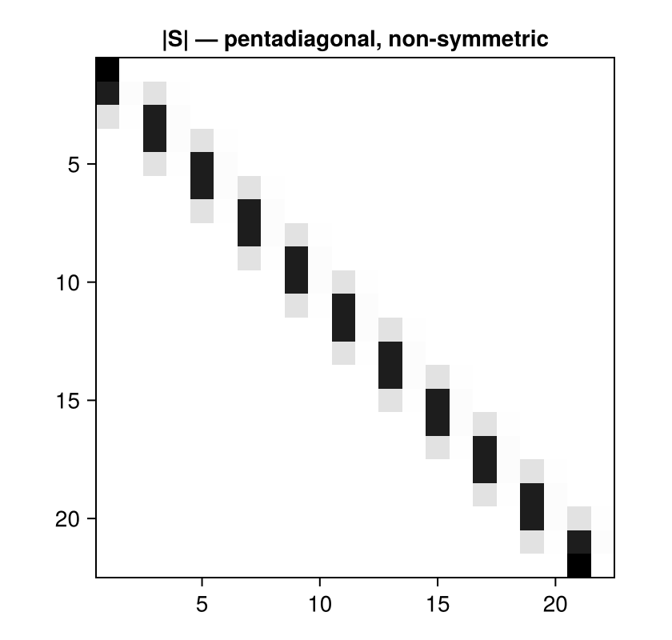
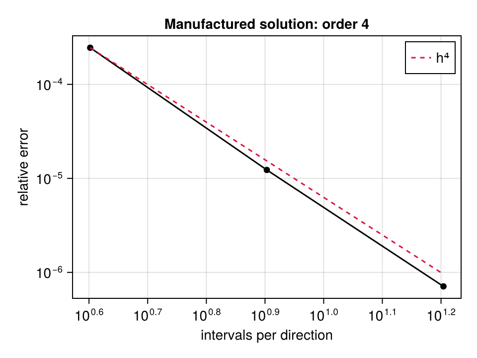
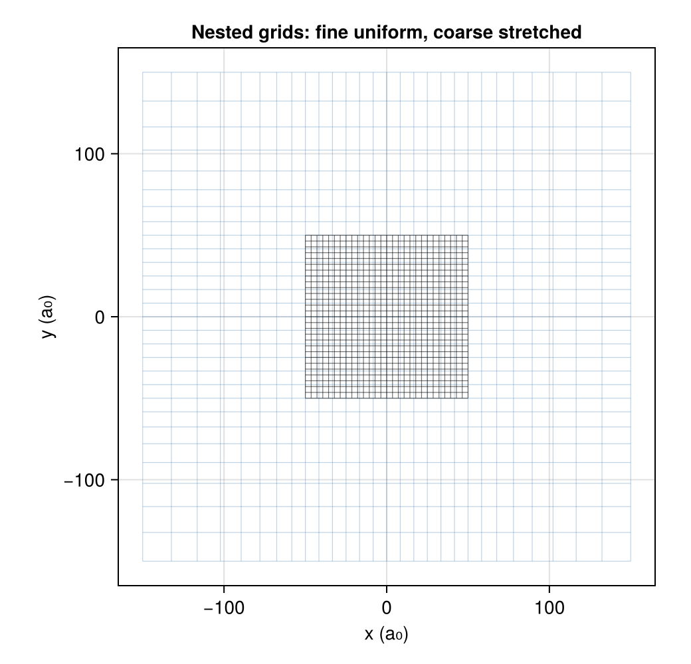

Numerics
How the Vlasov–Poisson system is discretised. Four choices carry everything: cubic Hermite splines, collocation at Gauss points, a Poisson solve by fast diagonalisation, and a position Verlet.
Cubic Hermite splines
The field lives on a tensor-product grid of 1D axes (SplineAxis). Each knot carries two basis functions rather than one:
Value— equal to 1 at its knot, with vanishing derivative;Slope— equal to 0 at its knot, with derivative 1.
Their support is two intervals, [g[k-1], g[k+1]]. The pair is reified in BasisIndex; the original Fortran packed it into a single integer ido = 2k + isig, whence the i/2 and mod(i,2) scattered through the code.
ax = uniform_axis(0.0, 6.0, 6)
x = range(0, 6; length = 601)
fig = Figure(size = (860, 330))
a1 = Axis(fig[1, 1], title = "Hermite basis at knot 4", xlabel = "x")
lines!(a1, x, [value(ax, BasisIndex(4, Value), t) for t in x],
color = :black, label = "Value")
lines!(a1, x, [value(ax, BasisIndex(4, Slope), t) for t in x],
color = :crimson, label = "Slope")
vlines!(a1, ax.knots, color = (:gray, 0.35))
axislegend(a1, position = :lt)
a2 = Axis(fig[1, 2], title = "Knots and collocation points", xlabel = "x")
CairoMakie.scatter!(a2, ax.knots, fill(1.0, nknots(ax)), marker = :vline,
markersize = 22, color = :black, label = "knots g")
CairoMakie.scatter!(a2, ax.colloc, fill(0.6, length(ax.colloc)), markersize = 9,
color = :crimson, label = "collocation τ")
ylims!(a2, 0.2, 1.4); hideydecorations!(a2)
axislegend(a2, position = :lt)
fig
An interpolant on this basis reproduces every polynomial of degree ≤ 3 exactly. That is not decoration: it is what makes the discrete second derivative exact on cubics, and it is how the operator is tested without any external reference.
Collocation at Gauss points
The equations are imposed at collocation points: the two 2-point Gauss–Legendre nodes of each interval, plus the two domain ends. With n intervals that gives 2(n+1) points for 2(n+1) basis functions — a square system.
CollocationMatrices assembles S, S′, S″ with S[k,i] = φᵢ(τₖ). They are pentadiagonal and non-symmetric: rows index points, columns index functions. The two interior points of an interval see only the four basis functions of the two knots bounding it.
cm = CollocationMatrices(uniform_axis(0.0, 1.0, 10))
S = abs.(Matrix(cm.S))
fig = Figure(size = (420, 400))
a = Axis(fig[1, 1], title = "|S| — pentadiagonal, non-symmetric",
yreversed = true, aspect = DataAspect())
heatmap!(a, permutedims(S), colormap = :binary)
fig
The 1D second-derivative operator is D = S″ S⁻¹, restricted to the interior (laplacian1d). Its spectrum is real and strictly negative — an observed property, checked at construction, on which the whole tensor method depends.
On BandedMatrices v1.12.0, right division between two BandedMatrix returns a wrong result without error (residual ≈ 0.3). The code writes Matrix(S″) / lu(S) deliberately, and a non-regression test fails if anyone "simplifies" it back to S″ / S.
Poisson by fast diagonalisation
The 3D operator is separable:
\[\nabla^2 \;\to\; D\otimes I\otimes I + I\otimes D\otimes I + I\otimes I\otimes D\]
Diagonalising the 1D operator once, D = M Λ M⁻¹, turns the solve into three changes of basis and a pointwise division:
\[X = (M\otimes M\otimes M)\ \mathrm{diag}\!\left(\frac{1}{\lambda_i+\lambda_j+\lambda_k}\right)\ (M^{-1}\otimes M^{-1}\otimes M^{-1})\, B\]
This is the TBSCM method — Tensorial Basis Spline Collocation Method, L. Plagne & J.-Y. Berthou, J. Comput. Phys. 157(2), 419–440 (2000) — and it is implemented here as TensorSolver, for arbitrary dimension and for non-symmetric operators.
The cost structure is what makes it right for this problem: building a SplineMesh does the assembly, the factorisations and the diagonalisations once; every subsequent solve is six matrix products. In a time loop where only the right-hand side changes, that is exactly the shape one wants.
L = 2.0
φex(x, y, z) = sinpi(x / L) * sinpi(y / L) * sinpi(z / L)
function relerr(n)
a = uniform_axis(0.0, L, n)
m = SplineMesh(a, a, a)
cx, cy, cz = collocation_axes(m)
Φ = [φex(x, y, z) for x in cx, y in cy, z in cz]
sqrt(sum(abs2, solve((-3 * (pi / L)^2) .* Φ, m) - Φ)) / sqrt(sum(abs2, Φ))
end
ns = [4, 8, 16]
errs = relerr.(ns)
fig = Figure(size = (480, 360))
a = Axis(fig[1, 1], xscale = log10, yscale = log10,
xlabel = "intervals per direction", ylabel = "relative error",
title = "Manufactured solution: order 4")
scatterlines!(a, ns, errs, color = :black)
lines!(a, ns, errs[1] .* (ns ./ ns[1]) .^ -4, color = :crimson,
linestyle = :dash, label = "h⁴")
axislegend(a)
fig
Fourth order is the signature of cubic collocation at Gauss points. A lower order would mean a discretisation mistake, not a loss of precision — which is why it is asserted in the test suite rather than merely observed.
Boundary conditions: multipoles and lifting
The domain is finite; a cluster's potential is not. On the faces the code imposes the value the potential takes at large distance, from the multipole expansion of the density (Multipole): monopole and quadrupole, expressed in the barycentre frame, where the dipole vanishes by construction.
Those boundary values being non-zero, they are lifted: carried over to the right-hand side through the outermost columns of the complete operator (poisson_rhs!). So the right-hand side is −4πρ plus a boundary contribution that decays inwards but never exactly vanishes — the full operator is not strictly local.
Nested grids
One grid cannot do both jobs. The cluster needs resolution; the multipole expansion needs distance. NestedMeshes uses two levels:
- a fine uniform grid over
[-rcluster, rcluster]; - a coarse geometrically stretched grid out to
rbox, whose first stretched step matches the fine step, so the join has no discontinuity (stretched_axis,stretch_ratio).
fine = uniform_axis(-50.0, 50.0, 28)
coarse = stretched_axis(50.0, 150.0, 7, 8)
fig = Figure(size = (520, 500))
a = Axis(fig[1, 1], aspect = DataAspect(), xlabel = "x (a₀)", ylabel = "y (a₀)",
title = "Nested grids: fine uniform, coarse stretched")
for g in coarse.knots
lines!(a, [g, g], [coarse.knots[1], coarse.knots[end]],
color = (:steelblue, 0.35), linewidth = 0.6)
lines!(a, [coarse.knots[1], coarse.knots[end]], [g, g],
color = (:steelblue, 0.35), linewidth = 0.6)
end
for g in fine.knots
lines!(a, [g, g], [fine.knots[1], fine.knots[end]],
color = (:black, 0.55), linewidth = 0.6)
lines!(a, [fine.knots[1], fine.knots[end]], [g, g],
color = (:black, 0.55), linewidth = 0.6)
end
fig
The solve runs coarse first, with multipole boundaries; then the fine grid reads its own boundary values by interpolating the coarse solution (boundary_from_coarse!). Nesting is a condition, checked at construction: a fine grid sticking out of the coarse one would have nothing to read.
Deposition, and the two representations
Two representations of the same field coexist, and confusing them is the classic bug of this method:
| Representation | Produced by | Consumed by |
|---|---|---|
| values at the collocation points | deposition | the mean field, Poisson's rhs |
| spline coefficients | S⁻¹ in each direction | field evaluation, moments |
spline_coefficients! converts one to the other. total_charge integrating back to N electrons is the control on a deposition, and it is asserted everywhere.
Smoothed deposition
A pseudo-particle is a Gaussian packet, not a point. Depositing it means computing the overlap of that Gaussian with each basis function. On a constant-step grid that overlap depends only on the particle's position within its cell, so it is tabulated once (GaussianSmoothing, the Fortran's maketaint) and interpolated thereafter.
The consequence is a stencil of 8³ = 512 points per particle instead of the 2³ = 8 of a trilinear deposit — which is the whole point, and also why the deposition is the heaviest particle loop.
ax1 = uniform_axis(-50.0, 50.0, 28)
sm = GaussianSmoothing(ax1)
msh = SplineMesh(ax1, ax1, ax1)
n = nbasis(ax1)
single = [(1.3, -0.7, 2.1)]
ρs, ρt = zeros(n, n, n), zeros(n, n, n)
deposit_smoothed!(ρs, msh, sm, single; charge = 1.0)
deposit!(ρt, msh, single; charge = 1.0)
(smoothed = count(!iszero, ρs), trilinear = count(!iszero, ρt), σ = sm.σ)(smoothed = 512, trilinear = 8, σ = 1.1904761904761898)The quadrature building those tables is trapezoidal over a fixed number of intervals, not a high-order rule, and the kernel therefore is not exactly normalised — about 1e-5. That is reproduced rather than fixed: it is part of what defines the original method. The deposition renormalises afterwards, so charge conservation is exact even though the kernel is not.
Time integration
A position Verlet: the velocity is never stored, it is read from the gap between two successive positions (ParticleCloud). Symplectic, so the energy oscillates without drifting.
Verlet needs two positions to start, not a position and a velocity. Priming therefore happens in two stages, as in the Fortran's moveback1 / moveback2 (half_step_back, full_step_back):
q(0), p(0) ──half_step_back──▶ q(−dt/2)
│
forces at q(−dt/2)
│
q(0), q(−dt/2), F ──full_step_back──▶ q(−dt)previous would then hold q(−dt/2) where the scheme expects q(−dt) — an initial velocity wrong by a factor of two. The symptom is a kinetic energy rising from the very first steps.
The original's moveback2 carries a dimensional slip (dt·2 where a Taylor expansion gives dt²/4M); the port reproduces it by default and offers the consistent form under consistent = true. See Validation.
The random generator
The initial sampling is the simulation's only non-deterministic input, so the port reproduces the original generator bit for bit (Ran2) — typo included. The Fortran's ran2 has IQ1 = 3668 where Numerical Recipes has 53668; Schrage's method then no longer avoids overflow, and the sequence is not L'Ecuyer's but an unstudied variant.
Reproducing it is what allows the initialisation to be compared particle by particle against the oracle, instead of merely observing compatible statistics — which could not tell a bug from sampling noise.